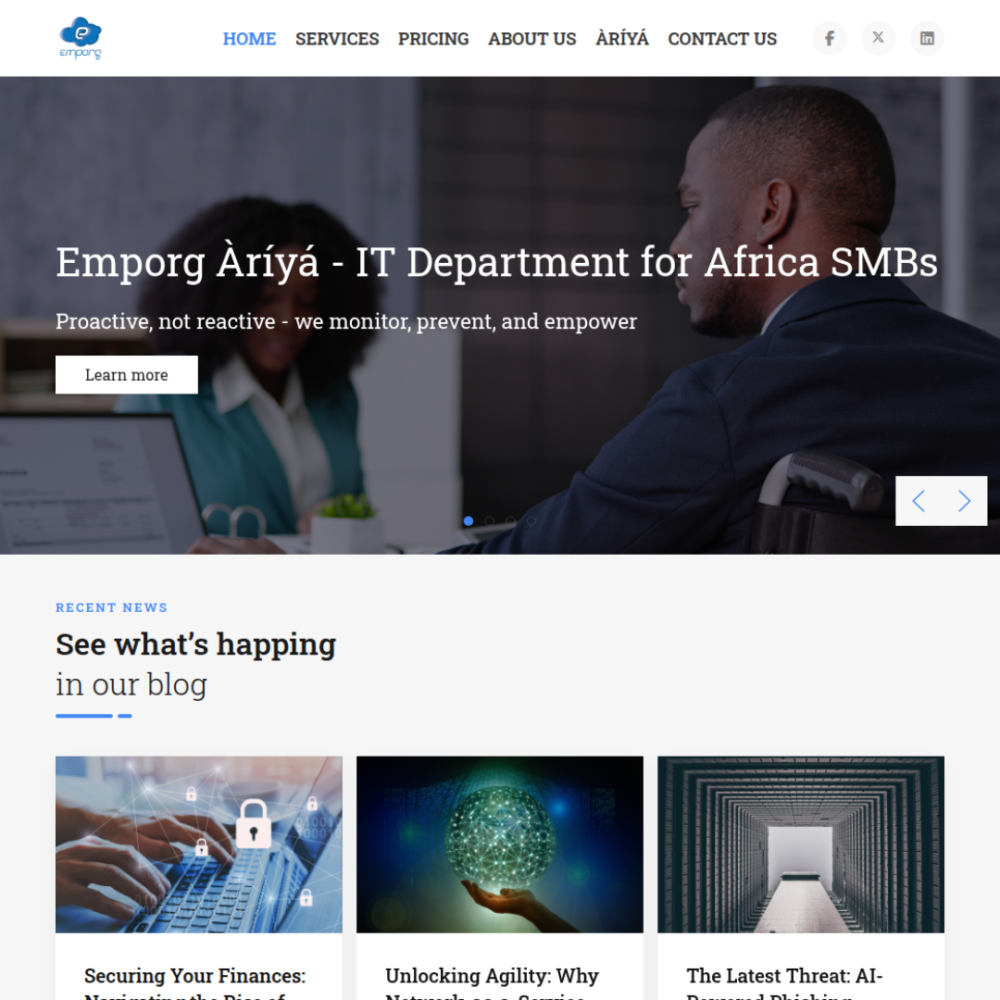
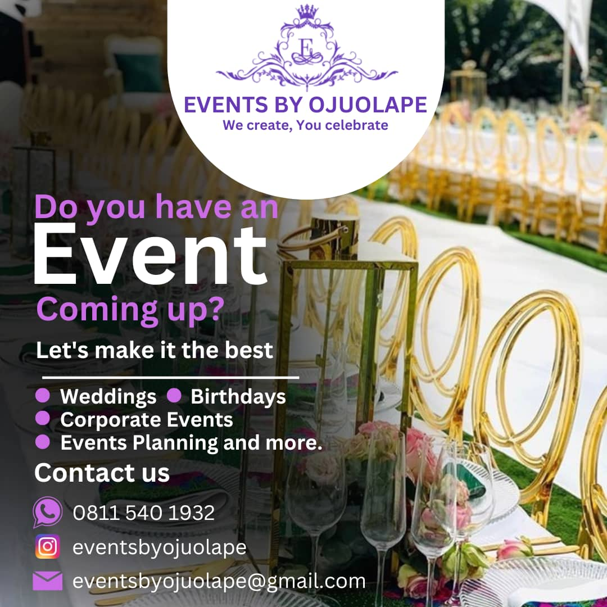
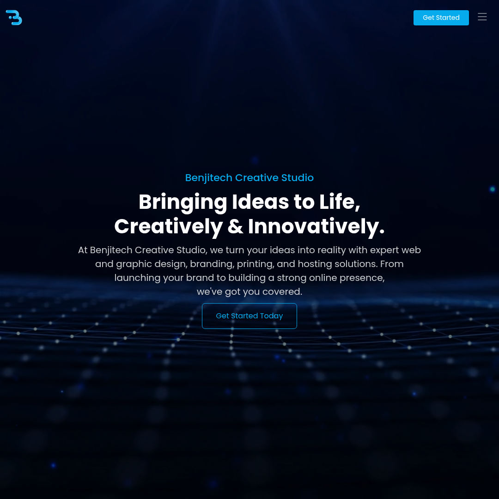

Technically versatile professional with a strong foundation in IT support and a growing focus on web development and digital design. Experienced in end-user technical support, Microsoft 365 administration, networking, and surveillance systems, while actively building skills in HTML, CSS, JavaScript, React, and UI/UX design. Bringing a unique blend of infrastructure knowledge and creative problem-solving.
Hey there, I'm Ayomide — an IT Support Specialist and Junior Web Developer based in Lagos, Nigeria. I have a strong foundation in technical support, systems administration, and networking, combined with a growing passion for web development and UI/UX design. I thrive on making complex systems both functional and user-friendly.
I bring a unique blend of infrastructure knowledge and creative problem-solving — eager to transition into web development and tech-adjacent roles where both technical depth and design thinking are valued.
I specialise in bridging the gap between technical infrastructure and digital experiences — from keeping systems running smoothly to building clean, responsive web solutions
Building responsive, user-friendly websites using HTML, CSS, JavaScript, and React — from layout and structure to full deployment.
Providing reliable end-user technical support — resolving hardware, software, and network issues onsite and remotely with speed and precision.
Configuring and maintaining network infrastructure including routers, switches, VPNs, and ISP failover setups to ensure maximum uptime.
Managing Outlook, OneDrive, Teams, and SharePoint — including shared mailboxes, distribution lists, and troubleshooting email delivery issues.
Combined with a passion for continuous learning, my qualifications extend beyond academia, encompassing hands-on projects and a commitment to staying at the forefront of design trends.
Ajayi Crowther University, Oyo State
Graduated in 2023 with a solid foundation in computing, systems, and software development — underpinning my technical expertise in IT support and web development.
Hands-On Technical Training
Practical experience in hardware/software troubleshooting, Windows Server, MikroTik networking, and HP ProLiant server maintenance gained through real-world roles.
Self-Directed Learning & Practice
Actively developing skills in HTML, CSS, JavaScript, React, and basic UI/UX design, with hands-on projects including a company website built on Joomla.
Emporg Limited — Sept 2023 to Present
Providing day-to-day technical support, administering Microsoft 365, managing network infrastructure, and designing the company website using Joomla.
Key Role at Emporg Limited
Configured MikroTik routers, managed ISP failover between IPNX and MTN, maintained HP ProLiant DL380 servers, and reorganised switch cabling for improved uptime.
Key Role at Emporg Limited
Installed and maintained 10+ IP cameras, administered shared mailboxes and distribution lists, and resolved SMTP email delivery issues with ISP coordination.
The seamless integration of innovation and user-centric design in their work has left a lasting impression on our clients and elevated our digital presence.

Designed and developed the company website using Joomla, handling layout, content structure, and full deployment.

Built this responsive portfolio from scratch using HTML, CSS, and JavaScript, showcasing my skills, experience, and recent work.

Designed and built the Benjitech Creative Studio website. A clean, branded web presence for creative and tech services.